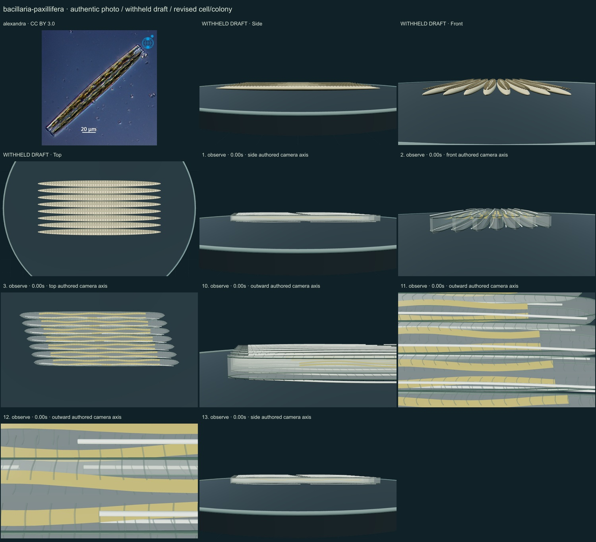
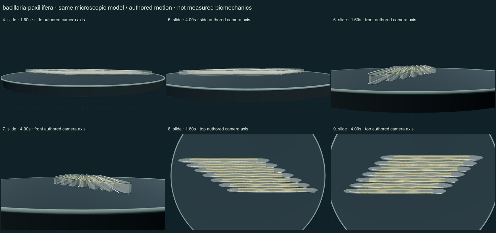

PhenoVoxel Archive · v0.6.26 · October25,2026
300 records after verified publication; all50 original held drafts have initial corrections, including all46 in the renewed foreground request.250 additional species remain to550. Release register.
alexandra · CC BY 3.0. Source-labelled real organism reference; preparation, life-stage, location and selected phenotype do not establish all species variation or measured 3D anatomy. Resized inside1000 px, flattened and JPEG encoded; no generative alteration.
Exact source/download/derivative checksums and crop regions are preserved in the linked data. Tabellaria crops contain only panelg; Rhodospirillum contains only Figure1a and retains strain labels/scale. No other copyrighted reference figures are redistributed. Source photographs are authentic, with no generated organisms.
Seven long linear, tapered-ended frustules form a close parallel colony. Paired plastid ribbons, fine transverse relief and an eccentric longitudinal raphe cue are distinct from the older opaque pointed strips.
Paired silica skins, fine transverse relief, an eccentric raphe cue and two selected folded plastid ribbons replace the old opaque pointed strips. The authentic live stack photograph is kept with exact attribution.
Remaining: Fine fibulae, interlocking structures and terminal raphe architecture remain incomplete; tips are still too idealized and plastids too regular. Constant lateral spacing and overlap are geometric constraints, not hook/mucilage contact mechanics or measured coordinated movement. Optical contrast, forces and speed are unmeasured.
Neighboring retained cells slide longitudinally while preserving lateral spacing and substantial overlap. Hook ultrastructure, mucilage forces, measured trajectories and coordinated regulation remain absent.
Partly stylized, unmeasured educational reconstructions. Silica/envelope optics, fine ultrastructure, proportions and motion timing remain approximate. No independent specialist validation, accuracy percentage, measured biomechanics, physiological solver or simulated microscopy. Source preparation and taxonomic opinions are explicit.
13 actual final nonblank main-viewer states individually inspected on two labelled sheets: authentic micrograph, withheld draft, whole-model side/front/top, six representative motion states, three partial detail views and Observe reset.


Partly stylized, unmeasured educational reconstructions. Silica/envelope optics, fine ultrastructure, proportions and motion timing remain approximate. No independent specialist validation, accuracy percentage, measured biomechanics, physiological solver or simulated microscopy. Source preparation and taxonomic opinions are explicit. Prior293 species objects and credited wolf/tiger meshes remain unchanged. Recorded occurrences are not native ranges; two unresolved name/aggregator associations are withheld. Protista/Monera are legacy reporting conveniences, Bacteria and Archaea separate domains.
Original geometry/controller MIT. Authentic photo portions retain their credited license. Model-only frames are original rendered geometry.
Exact findings, source scopes, screenshot and photo hashes